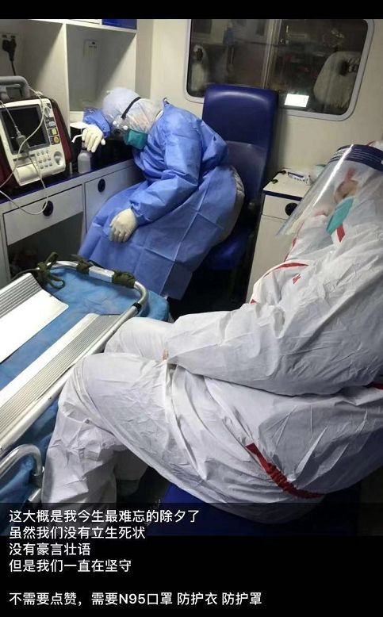
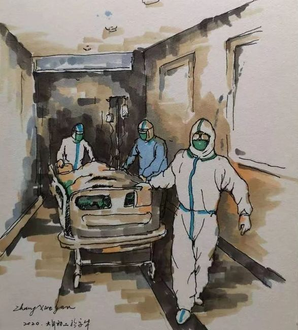
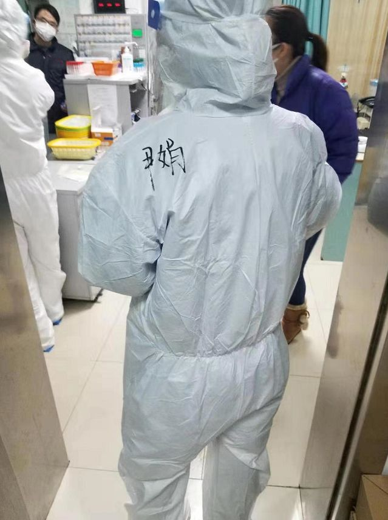

不缺顶尖医院、有SARS前车之鉴，为何武汉仍然每一步都走晚了？
原文链接 备份链接 武汉各大医院发热门诊的紧张态势已有一周，七家定点医院启动才两天已被压到极限。 武汉不缺顶级医院，不缺顶级专家，不缺顶级医疗能力，缺的是公共卫生防控能力、行政效率和疫情处理流程。 在患者和大医疗机构之间，未见到基层 …
2019年3月，武汉协和医院急诊科副主任孙鹏调到该医院的西院，负责急诊科的工作。12月底华南海鲜市场冠状病毒事发，西院开设发热门诊，这两个门诊的工作都落到他头上。今年1月26日上午，孙鹏告诉记者，医院刚接到通知，他们西院也被征为定点医院，成为武汉市第三批可以收治诊断为新型冠状病毒肺炎病人的医院之一。
以下是孙鹏口述。
口述 | 孙鹏
记者 | 驳静
最疲惫的一个除夕

10天前，我从家里收拾了点衣服，住到了我租在医院附近的房子里，开始自我隔离。除夕晚9点钟，我刚到住处，想说过年嘛，一个人也煮点饺子。刚吃完，又赶往医院，因为有个病人情况突然恶化。

这位病人早上刚确诊新型冠状病毒肺炎，还没来得及送去定点收治医院。上午我还问他感觉怎么样，他说“蛮好”，整个白天其实都还不错，哪知到了晚上又急转直下。
我们抢救了一个多小时，戴着防护面罩、口罩，穿着防护服的我们，其实心里清楚，如此近距离实施抢救，感染机率又增加不少，可这种时候医生不可能退缩，也不会退缩的。我心里希望奇迹发生，但这位病人的基础状态并不好，老年人常见的心脏和血压问题都有，感染肺炎对他来说就是一个严重打击。实际上，目前我们医院的死亡病例也以年老的、有基础疾病的患者居多。
那晚他的病情发展非常快，其实之前还有过一次抢救，那回成功了，这第二次，很遗憾没有。我们亲手把他放到停尸袋里，再将其送入殡葬车。这要是平常，病人宣布死亡后，剩下的事其实是家属和殡仪馆的，但在这种特殊时期，家属有恐慌心理，这工作几乎是我们医护人员做的。这天晚上还有一例死亡，也是一位年纪很大的患者，长期卧床不起，后来家属决定不进行积极插管治疗，也在这天晚上自然地走掉了。
这一切结束，已经是凌晨，我从医院出来，开车回家。可能因为天黑，可能因为公共交通都没了，可能因为我眼镜上有雾气，总之路上一辆车都没看到。独自驾驶在这样的路上，头脑里就在过刚才的一些画面。武汉一直下雨，又冷又湿，我站在病房中间，旁边放着两具尸体，同事从身边走过，都穿着防护服，我也穿着防护服，戴着护目镜，护目镜里还有我的眼镜，每天都雾蒙蒙的，还有病人排队，耳边听到家属在门外哭泣。
后来我发了条消息到同事群里，“抢救了一晚上，最后以两具尸体收场，真是疲惫”。我从业20余年，除夕夜在急诊科度过也是常事。但从前年三十的病房，多少还有过年气氛，昨晚是真没有。抢救完病人，我只有全身心的疲惫。这种无能为力的感觉不好受，今年的最后一天，真是难过得很。

作者：张学彦 《向医护人员致敬》
这一个月来，我时时提着一颗心，最担心的就是同事们中招。前几天我们科室的陈丹丹医生下夜班后告诉我，说自己发烧了，我当时心里就是“咯噔”一下，而且我也能感觉她也很紧张，下夜班后正是人最虚弱的时候，我就赶紧安排她去做检查，心里祈祷她只是普通的受凉感冒。这位年轻的女医生，回去只休息了一天，就给我发信息说，“主任，如果晚上不再发烧，明天的班我自己上吧，免得其他同事顶我的班，又把他们累倒了”。看到这种话真是鼻子发酸。所幸后来她冠状病毒核酸检测结果是阴性。
我给急救车安排了3位医生，跑24小时，休息2天，三班倒。讲实话这个岗位很难做，因为他们现在主要承担着运送确诊病人的职责。路途短则一个小时，长则超过两个小时，在密闭空间，与重症患者近距离相处，有些还上着呼吸机。他们的隔离服不透气，车厢里又闷，跑一次内衣就湿透一次，回来后给车子消毒，换一身衣服，再送下一个，最晚的一次送到凌晨四五点才结束。你说他们心理压力有多大？但没人跟我诉过苦。
发热门诊有轮休，再过几天，会有一批同事顶替我们，只求撤下来的时候，大家能一起平平安安地撤退。
希望冬天早点过去
我们西院发热门诊的留观床位是20张，当时没想到会有这么多病人。我记得12月底，最开始的时候我们只接待了一两位华南海鲜市场的病人。一开始说“没有人传人”，后来判断变了，说“有限人传人”。接诊病人到达100多位的时候，我在心里打了个记号，这几天又涨到300多。这里面有跨区来看诊的，因为我们西院在汉阳区，是个经济开发区，中心城区人太多，有些患者宁可跑远一点，跨区来看诊；还有患者是来复诊的，这样一来，看诊人数就是滚雪球，越滚越大。
人越来越多，与此形成对比的是，病人们的情绪反而比往常稳定。我们护士也在说，往常就医，有时候排队排久了，还会有病人发脾气，跟医护人员吵吵闹闹，这段时间反而平静很多。我觉得原因有三个：一是大家逐渐对这个病有认知了；二是多少听到看到周围朋友亲戚的案例，心里有预期；第三，这个病对年老患者更易造成危害，很多年轻患者感染后能走能动，不受限制，跟卧床不起感觉还是两样。
有一个三四十岁的男士让我感触很深。他带着父亲来看病，他父亲当时只是有点胸闷，稍微有点喘，有点发烧，可我一看CT片子，是个“大白肺”。我告诉他说病情“不容乐观”，但他觉得他父亲能走能说话，头脑也清楚，我可能在夸大其辞。当时还是1月初，接着病情就加重了，在我们这里做了气管插管，又转到呼吸科重症病房。就在转病房的走廊上，我看他一声不吭的。
他父亲后来没能扛下来。隔了一周，我看到他又来了，这回是自己来看诊。我看他的片子，两个肺一起感染了，然后他妹妹也来了，同样是双肺感染。你看，他们一家感染了3个。
我接到的第二个确诊为新型冠状病毒肺炎的病人，是海鲜酒店的采购人员，基本每天都会去华南海鲜市场。我印象很深，我们的负压救护车要把他转去金银潭医院时，他爱人挺高兴，跑来道谢，还说“等病情好转，要带几只土鸡子”。一个星期后，发热门诊又碰到了她了，只是咳嗽，没有发热，但肺部CT显示也是病毒肺，很可能就是照顾病人时受到的感染，后来她给转去金银潭医院了。当时心情真是沉重。

陌生人为孙鹏所在的医院送去的外卖，备注写着：外卖小哥，麻烦您送给医院的医生或护士们，麻烦了，您也注意穿戴防护口罩，辛苦了！
我今天又看到一个病人家属。她老伴是我接到的第三个不明肺炎患者。这位患者只是参加了一个老年聚会，并没有去过华南海鲜市场。后来他恢复得挺好，一晃半个月过去，我又在医院看见他老伴儿了，她看到我说，“谢谢你。我老伴儿好了，我又得了”。
我们就发现，我们把一个病人收到病房，好不容易出院了，照顾他的这些家属，过了潜伏期，又出问题了。接触到的家庭聚集性病人越来越多，我就觉得事态严重，跟其它医院的同行交流，他们也有同感，陆续地我们医护人员就开始自我隔离了。

我在担心我14岁的女儿。我爱人在武汉协和医院本部，是一名麻醉科医生。现在医院大都是取消休假，全员进入排班系统，前两天她跟我说，马上就轮到她们上一线了。这样一来，她也得隔离，家里就剩孩子一人，学校延迟开学，很现实的问题是吃饭怎么办。感觉上是，哦，挑战还在后面。
前几天女儿给我写了封信，还是文言文的文体，信里她表达关心，“流感突起，肺炎逼至，想父亲安康”。又反省自己，说她怪我“常早出晚归，于我偶有失信”，意思是以后会更体谅她爸爸，不会再“怪罪于我”。这让我大吃一惊，想不到孩子能写出这样的东西，我突然意识到，没见女儿这一个多礼拜，真是长大了，所以我安慰我爱人说，孩子总要长大的，不如趁这时候。
 女儿的信
女儿的信
信里还有一句，“吾坚信没有一个冬日不可逾越，病毒肆虐的当下，亦如是”。我常在心里琢磨这句话，“没有一个冬日不可逾越”，说得多好。在这种非常时期，我看到很多病人在我们留观病房治好，非常高兴地回家，可无法松口气，因为病人不断出现。再看到我的同事有倒下的、送去治疗的，压力、担忧和恐惧，我都有。常在河边走，哪有不湿鞋，天天泡在这里，没准哪一天你一时疏忽，自己就中招了。但对我们这个队伍来说，没有退路，你只能向前，只能每次上班盯着自己，小心再小心。**我希望冬天早点过去，“逾越”那天早日到来。
**
（文中插画经授权转载）

作者档案

**驳静
**
三联记者，喜欢听故事、说人话。
26分钟前


三联生活周刊
个人微博、豆瓣都是：驳静

#我在疫情一线#
话题征稿持续进行中
《三联生活周刊》全媒体现面向所有读者征稿。包括但不限于：奋斗在疫情一线的医护人员、媒体同行们的故事，专业人士对接下来防疫工作的建议……
此次征稿形式不限：文字（1500～2500字为佳）、图片（原创拍摄）、音频视频（原创录制）都欢迎。大家携手，共度难关！注：请务必保证故事真实、客观，不造谣、不传谣。
《三联生活周刊》微信公号投稿邮箱：zhuangao@lifeweek.com.cn来稿格式：#我在疫情一线#➕标题《三联生活周刊》官方微博参与话题：#我在疫情一线#《三联生活周刊》中读APP投稿邮箱（音频投稿为主，5分钟以内为佳）zhongdu@lifeweek.com.cn
期待你的来稿！
⊙文章版权归《三联生活周刊》所有，欢迎转发到朋友圈，转载开白请联系后台。未经同意，严禁转载至网站、APP等。
驳静
微信扫一扫赞赏作者 赞赏
长按二维码向我转账
受苹果公司新规定影响，微信 iOS 版的赞赏功能被关闭，可通过二维码转账支持公众号。
文章已于修改
原文链接 备份链接 武汉各大医院发热门诊的紧张态势已有一周，七家定点医院启动才两天已被压到极限。 武汉不缺顶级医院，不缺顶级专家，不缺顶级医疗能力，缺的是公共卫生防控能力、行政效率和疫情处理流程。 在患者和大医疗机构之间，未见到基层 …
原文链接 备份链接 根据国家卫健委的通报，截至1月23日零点，共统计到国内新型冠状病毒感染的肺炎确诊病例571例，其中超过400例来自湖北。死亡17例，均来自湖北。此刻的武汉面临以下问题：试剂盒数量不够、确诊艰难、床位短缺、高度疑似患者 …
原文链接 备份链接 口述 | 许平 记者 | 王珊 从2019年12月31日到现在，我所在医院的病人越来越多了，以发热门诊为例，目前每天病人的体量已经是医院平常病人数的10多倍，我们医院还在距离市中心比较偏的医院。冬季本身就是流感高发季， …
原文链接 备份链接 昨天除夕夜，我们收到了一份沉甸甸的读者来信。信件是由一名父亲写给他远在重庆老家的孩子。这个春节，他们夫妻二人作为浙江前线医护人员，为了对患者负责，放弃了与家人团聚的时间。他们没时间感叹，也来不及思恋，昼夜奋战在疫情一 …
原文链接 备份链接 17 年前的那场公共卫生危机，未能及时公开疫情成为事后被诟病最多的问题之一，也成为中国疾病防控系统以及政府信息公开等许多方面的重要转折点。 而多年后，越来越多的互联网官方渠道成为了重大事件的定海神针，「官宣」被普遍接 …